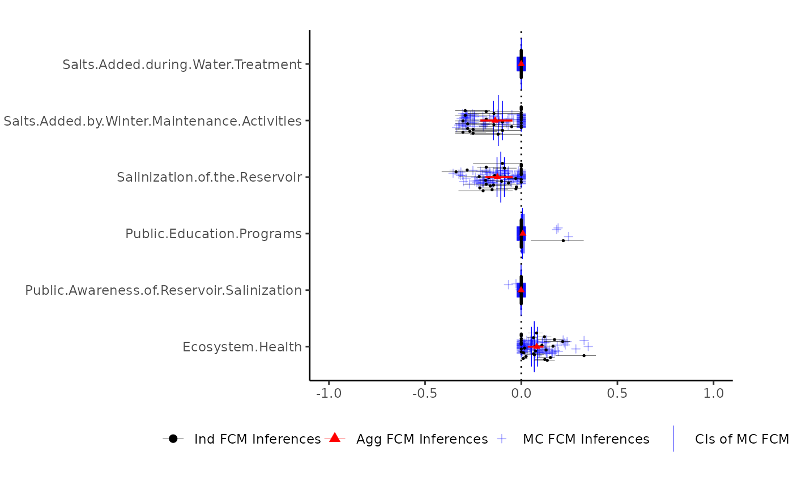
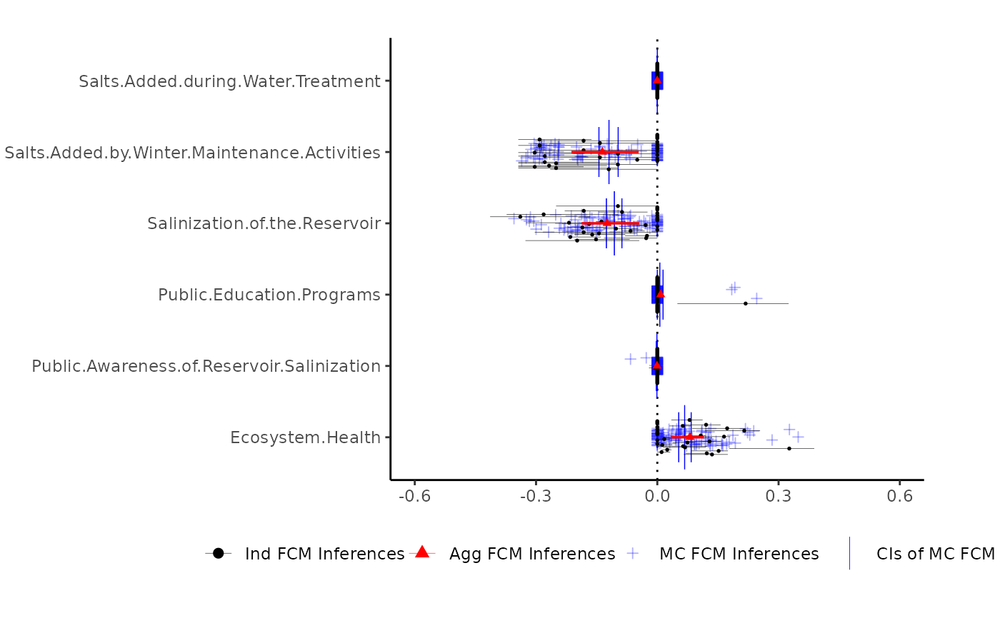

Print the output of the autoplot function (autoplot.fcmconfr)
Usage
# S3 method for class 'fcmconfr'
plot(x, ...)Arguments
- x
A direct output of the
fcmconfrfunction- ...
Additional inputs: - interactive Open plot in interactive shiny app # Plot Formatting Parameters - filter_limit Remove concepts whose inferences do not exceed this value - coord_flip Swap x- and y-axes (i.e. rotate plot) - text_font_size (Mainly for shiny use, i.e. leave blank) Set text font size # Plot Aesthetic Parameters (and defaults) - mc_avg_and_CIs_color = "blue" - mc_inferences_color = "blue" - mc_inferences_shape = 3 - ind_inferences_color = "black" - ind_inferences_shape = 16 - agg_inferences_color = "red" - agg_inferences_shape = 17 - ind_ivfn_and_tfn_linewidth = 0.1 - agg_ivfn_and_tfn_linewidth = 0.6
Examples
# Example using TFN FCMs fcmconfr
tfn_example_fcmconfr <- fcmconfr(
adj_matrices = sample_fcms$simple_fcms$tfn_fcms,
# adj_matrices = group_tfn_fcms,
# Aggregation and Monte Carlo Sampling
aggregation_function = 'mean',
monte_carlo_sampling_draws = 100,
# Simulation
initial_state_vector = c(1, 1, 1, 1, 1, 1, 1),
clamping_vector = c(1, 0, 0, 0, 0, 0, 0),
activation = 'rescale',
squashing = 'sigmoid',
lambda = 1,
point_of_inference = "final",
max_iter = 1000,
min_error = 1e-05,
# Inference Estimation (bootstrap)
inference_estimation_function = mean,
inference_estimation_CI = 0.95,
inference_estimation_bootstrap_reps = 1000,
# Runtime Options
show_progress = TRUE,
parallel = TRUE,
n_cores = 2,
# Additional Options
perform_aggregate_analysis = TRUE,
perform_monte_carlo_analysis = TRUE,
perform_monte_carlo_inference_bootstrap_analysis = TRUE,
include_zero_weighted_edges_in_aggregation_and_mc_sampling = TRUE,
include_monte_carlo_FCM_simulations_in_output = TRUE
)
#> [1] Simulating Input FCMs
#> [1] Initializing cluster
#> [1] Running Simulations in Parallel
#> [1] Sampling from column vectors
#> Sampling from column vectors[1] Constructing monte carlo fcms from samples
#> Constructing monte carlo fcms from samples[1] Initializing cluster
#> [1] Running Simulations in Parallel
#> [1] Performing bootstrap simulations
#> [1] Initializing cluster
#> [1] Sampling means
#>
|
| | 1%
|
|= | 1%
|
|= | 2%
|
|= | 3%
|
|== | 3%
|
|== | 4%
|
|== | 5%
|
|=== | 5%
|
|=== | 6%
|
|=== | 7%
|
|==== | 7%
|
|==== | 8%
|
|==== | 9%
|
|===== | 9%
|
|===== | 10%
|
|===== | 11%
|
|====== | 11%
|
|====== | 12%
|
|====== | 13%
|
|======= | 13%
|
|======= | 14%
|
|======= | 15%
|
|======== | 15%
|
|======== | 16%
|
|======== | 17%
|
|========= | 17%
|
|========= | 18%
|
|========= | 19%
|
|========== | 19%
|
|========== | 20%
|
|========== | 21%
|
|=========== | 21%
|
|=========== | 22%
|
|=========== | 23%
|
|============ | 23%
|
|============ | 24%
|
|============ | 25%
|
|============= | 25%
|
|============= | 26%
|
|============= | 27%
|
|============== | 27%
|
|============== | 28%
|
|============== | 29%
|
|=============== | 29%
|
|=============== | 30%
|
|=============== | 31%
|
|================ | 31%
|
|================ | 32%
|
|================ | 33%
|
|================= | 33%
|
|================= | 34%
|
|================= | 35%
|
|================== | 35%
|
|================== | 36%
|
|================== | 37%
|
|=================== | 37%
|
|=================== | 38%
|
|=================== | 39%
|
|==================== | 39%
|
|==================== | 40%
|
|==================== | 41%
|
|===================== | 41%
|
|===================== | 42%
|
|===================== | 43%
|
|====================== | 43%
|
|====================== | 44%
|
|====================== | 45%
|
|======================= | 45%
|
|======================= | 46%
|
|======================= | 47%
|
|======================== | 47%
|
|======================== | 48%
|
|======================== | 49%
|
|========================= | 49%
|
|========================= | 50%
|
|========================= | 51%
|
|========================== | 51%
|
|========================== | 52%
|
|========================== | 53%
|
|=========================== | 53%
|
|=========================== | 54%
|
|=========================== | 55%
|
|============================ | 55%
|
|============================ | 56%
|
|============================ | 57%
|
|============================= | 57%
|
|============================= | 58%
|
|============================= | 59%
|
|============================== | 59%
|
|============================== | 60%
|
|============================== | 61%
|
|=============================== | 61%
|
|=============================== | 62%
|
|=============================== | 63%
|
|================================ | 63%
|
|================================ | 64%
|
|================================ | 65%
|
|================================= | 65%
|
|================================= | 66%
|
|================================= | 67%
|
|================================== | 67%
|
|================================== | 68%
|
|================================== | 69%
|
|=================================== | 69%
|
|=================================== | 70%
|
|=================================== | 71%
|
|==================================== | 71%
|
|==================================== | 72%
|
|==================================== | 73%
|
|===================================== | 73%
|
|===================================== | 74%
|
|===================================== | 75%
|
|====================================== | 75%
|
|====================================== | 76%
|
|====================================== | 77%
|
|======================================= | 77%
|
|======================================= | 78%
|
|======================================= | 79%
|
|======================================== | 79%
|
|======================================== | 80%
|
|======================================== | 81%
|
|========================================= | 81%
|
|========================================= | 82%
|
|========================================= | 83%
|
|========================================== | 83%
|
|========================================== | 84%
|
|========================================== | 85%
|
|=========================================== | 85%
|
|=========================================== | 86%
|
|=========================================== | 87%
|
|============================================ | 87%
|
|============================================ | 88%
|
|============================================ | 89%
|
|============================================= | 89%
|
|============================================= | 90%
|
|============================================= | 91%
|
|============================================== | 91%
|
|============================================== | 92%
|
|============================================== | 93%
|
|=============================================== | 93%
|
|=============================================== | 94%
|
|=============================================== | 95%
|
|================================================ | 95%
|
|================================================ | 96%
|
|================================================ | 97%
|
|================================================= | 97%
|
|================================================= | 98%
|
|================================================= | 99%
|
|==================================================| 99%
|
|==================================================| 100%
#> [1] Done
# Plot Defaults
plot(tfn_example_fcmconfr,
interactive = FALSE, # Set to TRUE to open shiny app
# Plot Formatting Parameters
filter_limit = 1e-4,
coord_flip = FALSE,
# Plot Aesthetic Parameters
mc_avg_and_CIs_color = "blue",
mc_inferences_color = "blue",
mc_inferences_shape = 3,
ind_inferences_color = "black",
ind_inferences_shape = 16,
agg_inferences_color = "red",
agg_inferences_shape = 17,
ind_ivfn_and_tfn_linewidth = 0.1,
agg_ivfn_and_tfn_linewidth = 0.6
)

# Changed from Plot Defaults
plot(tfn_example_fcmconfr,
interactive = FALSE, # Set to TRUE to open shiny app
# Plot Formatting Parameters
filter_limit = 1e-4,
coord_flip = FALSE,
# Plot Aesthetic Parameters
mc_avg_and_CIs_color = "blue",
mc_inferences_color = "blue",
mc_inferences_shape = 3,
ind_inferences_color = "black",
ind_inferences_shape = 16,
agg_inferences_color = "red",
agg_inferences_shape = 17,
ind_ivfn_and_tfn_linewidth = 0.1,
agg_ivfn_and_tfn_linewidth = 0.6
)

# Plot Defaults w/ Shiny App
# plot(tfn_example_fcmconfr,
# interactive = TRUE, # Set to TRUE to open shiny app
# # Plot Formatting Parameters
# filter_limit = 1e-4,
# coord_flip = FALSE,
# text_font_size = 12,
# # Plot Aesthetic Parameters
# mc_avg_and_CIs_color = "blue",
# mc_inferences_color = "blue",
# mc_inferences_shape = 3,
# ind_inferences_color = "black",
# ind_inferences_shape = 16,
# agg_inferences_color = "red",
# agg_inferences_shape = 17,
# ind_ivfn_and_tfn_linewidth = 0.1,
# agg_ivfn_and_tfn_linewidth = 0.6
# )